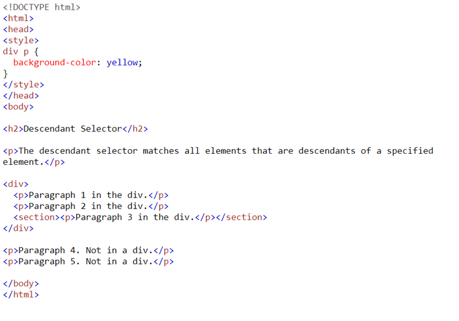
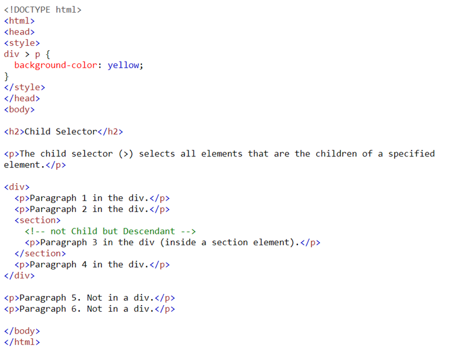
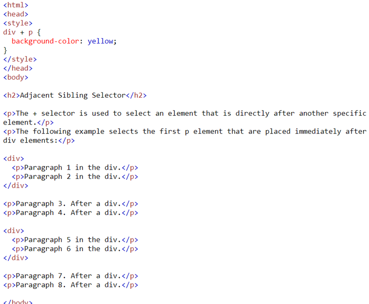
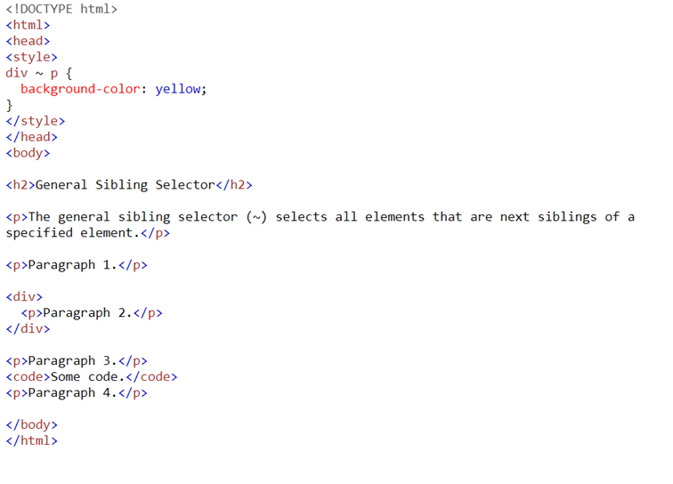
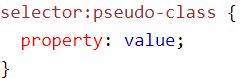

CSS
Syntax

The selector points to the HTML element you want to style. The declaration block contains one or more declarations separated by semicolons. Each declaration includes a CSS property name and a value, separated by a colon. Multiple CSS declarations are separated with semicolons, and declaration blocks are surrounded by curly braces.
A CSS rule consists of a selector and a declaration block.
CSS Selector
CSS Selectors are used to select HTML elements you want to style.
The element selector selects HTML elements based on the element name.
The grouping selector selects all the HTML elements with the same style definitions.
CSS Comments Syntax
CSS Comments start with /* and end with */. These comments can be put wherever you want in the code, and they can reach over multiple lines.
Colors
Color Names
In CSS, a color can be specified by using a predefined color name.
Hex Colors
A hexadecimal color is specified with: #RRGGBB (RR=red, GG=green, BB=blue). These hexadecimal integers specify the components of the color.
If the hexadecimal color is set to #00ff00, the green value is set to it's max and the red and blue color are at it's lowest. That's why the color green will be displayed.
3-digit-HEX-Value
The 3-digit hex code can only be used when both the values (RR, GG, and BB) are the same for each component. So, if we have #ff00cc, it can be written like this: #f0c. So the values can only represent values between 0 and f.
Backgrounds
Background-Color
The background-color property specifies the background color of an element. Color can be specified with: a color name, a hex value or an RGB value. The background color can be set for any HTML element. With the opacity property you specify the transparency of an element.
Background-Image
The background-image property specifies an image to use as the background of an element. By default, the image covers the entire page. (it is repeated) The background-image property can also be set for elements like paragraphs, where only the background of the text in the paragraph gets changed.
Background-Image - Repeat Horizontally or Vertically
By default, the background-image property repeats an image both horizontally and vertically. Because the image is getting repeated it can look like this:

But you can set the direction of the repeating by adding the property background-repeat and giving it the value repeat-x or repeat-y. You can also use this property to disable the repeat by typing this as value no-repeat. You can also use the property background-position to declare the position of the non-repeated background-image.
Background-Image - Fixed position
See above.
Text
Text Color
The color property lets you change the color of the text. (with color name, hex value or RGB value)
Text Alignment
The text-align property is used to set the horizontal alignment of a text. The text can be left or right aligned, centered or justified. The text-align-last property specifies how to align the last line of a text.
The direction and unicode-bidi properties can be used to change the text direction of an element.
The vertical-align property sets the vertical alignment of an element.
Text Decoration
The text-decoration-line property is used to add a decoration line to text. The text-decoration-color property sets the color of the decoration line. The text-decoration-style property sets the style of decoration line.
The text-decoration-thickness property sets the thickness of the decoration line.
The text-decoration property is a short-hand-property for the properties listed above.
Text Transformation
The text-transform property is used to specify uppercase and lowercase letters in a text. (can lowercase or uppercase everything or capitalize every first letter of a word)
Fonts
Difference between Serif and Sans-Serif
Serif: small stroke at the edges of each letter (create formality and elegance)
Sans-Serif: clean lines (modern and minimalistic look)

Font Family
The font-family property is used to specify the font of a text. The font-familiy property normally holds multiple fonts ("fallback" system) to ensure maximum compatability between browsers/operating systems.
Font Style
The font-style property most commonly use is to specify italic text. The property has the three values: normal, oblique and italic. (text is shown normally; the text is "leaning"; the text is shown in italics)
Font Size
The font-size property sets the size of the text. The font size can be absolute or relative
Absolute: sets the text to a specific size; doesn't allow user to change the text size in all browsers; useful when physical size of output is known
Relative: sets the text size relative to surrounding elements; allows user to change the text in all browsers
Set Font Size With Pixels
If you set the font size with pixels you have the full control over the size of the text.
Set Font Size With Em
Allows users to resize text. 1em = current font size. Default text size is 16px. Still problems in older browsers, but is used by lots of developers. Formula: px/16=em.
Font Weight
The font-weight property specifies the weight of a font. Value can be: normal, bold, lighter or a number like 800.
Link
Styling Links
Links can be styled with any CSS property, but in addition they can be styled depending on their state.
The four states a link can be in:
-
a:link - a normal, unvisited link
-
a:visited - a link the user has visited
-
a:hover - a link when the user mouses over it
-
a:active - a link the moment it is clicked
Combinators
CSS Combinators
A CSS selector can contain more than one simple selector. Between the simple selectors, we can include a combinator.
There are 4 different combinators:
-
descendant selector (space)
The descendant selector matches all elements that are descendants of a specified element.
 -
child selector (>)
The child selector selects all elements that are the children of a specified element.
 -
adjacent selector (+)
The adjacent sibling selector is used to select an element that is directly after another specific element. Sibling elements must have the same parent element, and "adjacent" means "immediately following".
 -
general sibling selector (~)
The general sibling selector selects all elements that are next siblings of a specified element.
 -
all selector (*)
Selects every element of a tag.
Pseudo Classes
General
A pseudo-class is used to define a special state of an element.
Syntax
Anchor Pseudo-Class
States of links: See Links description.
Hover on
Hover on an element means, that when you hover over it, the properties of the class are shown. See tabs of this website.(when you hover of them they change color).
CSS - The :first-child Pseudo-class
The :first-child pseudo-class matches a specified element that is the first child of another element.
Transition
The transition property value is specified as one of the following:
- The special value none, which specifies that no transitions will occur on this element. This is the default value.
- One or more single-property transitions, separated by commas.
Each single-property transition describes the transition that should be applied to a single property or all properties.
When you use transition it goes from a property like padding-top: 1rem to the rule where the transition property is in to padding-top: 4rem;
Gradients
There are many different gradients like linear-gradient, radial-gradient, repeating-linear-gradient, repeating-radial-gradient and conic-gradient.
You can give multiple colors as values and the gradient makes it goes from one color to the other. (transitions) (linear = linear, radial = circle, repeating = repeats itself multiple times, conic = circle but has strict color transition in linear dimension)
Positions
The property position can have a lot of different values. Value: sticky, fixed, absolute, relative, static.
Static is the default value.
Relative:
The element is positioned according to the normal flow of the document, and then offset relative to itself based on the values of top, right, bottom, and left. The offset does not affect the position of any other elements; thus, the space given for the element in the page layout is the same as if position were static.
Absolute:
The element is removed from the normal document flow, and no space is created for the element in the page layout. The element is positioned relative to its closest positioned ancestor (if any) or to the initial containing block. Its final position is determined by the values of top, right, bottom, and left.
Fixed:
Especially good for navbars. The element is removed from the normal document flow, and no space is created for the element in the page layout. The element is positioned relative to its initial containing block, which is the viewport in the case of visual media. Its final position is determined by the values of top, right, bottom, and left.
Sticky:
The element is positioned according to the normal flow of the document, and then offset relative to its nearest scrolling ancestor and containing block (nearest block-level ancestor), including table-related elements, based on the values of top, right, bottom, and left. The offset does not affect the position of any other elements.
When you scroll it sticks to the page until you exit the element/parent element which is made sticky.
Animation
The animation property is specified as one or more single animations, separated by commas. An animation has keyframes. These keyframes are special moments. For example a keyframe can be at 0% and another one can be at 50%. Then the animation goes from the values which are declared in 0% to 50%. If you add a keyframe of 25% to the animation it goes from 0% to 25% to 50%. You can change the position of something in the animation or change its values. Example of an animation.
@keyframes myAnimation
{
0% {
width: 100px;
height: 100px;
}
50% {
width: 200px;
height: 200px;
}
100% {
width: 1000px;
height: 2000px;
}
}
img {
animation: 1s linear infinite myAnimation;
}
In the example above an image starts at 100px * 100px (0%) then it goes to 50% where the image is already at 200px * 200px. When the animation reaches 100% it has the size 1000px*2000px. This happens over the time of 5 seconds because we said it in the css-rule of image. It is also repeated infinitely. The image starts at 0% when after the animation reaches 100%.
An animation can have a lot of values which can be assigned with multiple propertys, but with the animation property everything can be assigned at once.